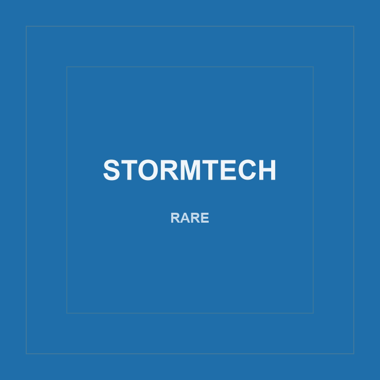
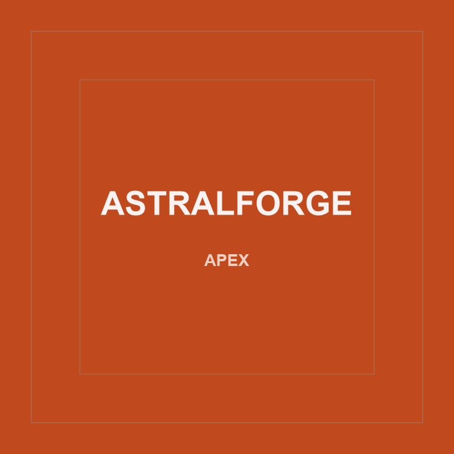
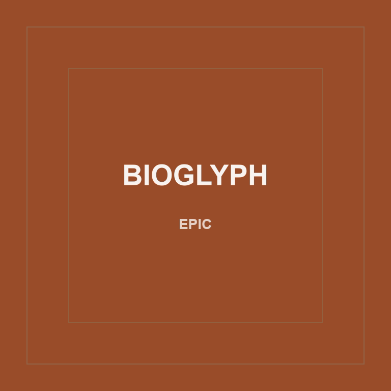

Core proof
Hub connection, shared memory, LAN visibility, and persistent state across networked screens.

CloudBeasts x lanOS
lanOS turns compatible devices on your LAN into a local tool system. Shell 1 is already running: core checks, shared memory, and LAN visibility. More shells bring more tools online.
Shell 1: Core Proof
Shell 1 checks whether the local system is alive. It shows the hub, shared memory, and network visibility before additional shells bring more tools online.
A phone sends a new memory. Shell 1 confirms the local hub. A laptop opens the same local site and sees both the older memory and the new iPhone message persist.
Shells are tool sets
Shell 1 broadens the system by showing what is available on the LAN. Shell 2 organizes devices into project-specific groups so information can move quickly and control can stay local.
Hub connection, shared memory, LAN visibility, and persistent state across networked screens.
Group connected devices by project, move information quickly between them, and run different local systems as device clusters connect.
Robotics is treated as an end-to-end creation path. Shell 2 helps builders organize the speed and control layer before the complete system is assembled.
A Note On The Renders
art is important and gen ai is not art. a certain level of inimitable understanding comes with making and creating. if you create without knowing why, its slop. in respect for real artists and digital creators we chose to leave placeholders.
One example workspace
EdgeDesk is a focused workspace built to show how CloudBeasts x lanOS can support real user workflows. It is not the only use case.
In this example, the workspace organizes profile state, risk settings, playbook logic, prompt generation, and post-action review into one surface. The same pattern can support interactive displays, home dashboards, creator workflows, operations panels, field tools, and persistent personal environments.
EdgeDesk does not execute trades today. It shows how a focused interface could later connect to approved data sources, broker APIs, local tools, or CloudBeasts/lanOS workflows.
Enterprise
Turn every screen you already own into a coordinated environment without making new infrastructure the starting point. Use the estimator to frame a pilot around device footprint and deployment scope.


Book a live demo
The page shows field proof from the local build. A live walkthrough can go deeper into EdgeDesk as one workspace surface, CloudBeasts as the action layer, lanOS coordination, and available route, status, and timestamp evidence.
Waitlist
Shell 1 is live. Join the waitlist for access, onboarding, and upcoming tool sets as additional shells come online. Performance depends on your network, compatible devices, and setup, but the core direction is local: speed, memory, and control close to the devices you already own.